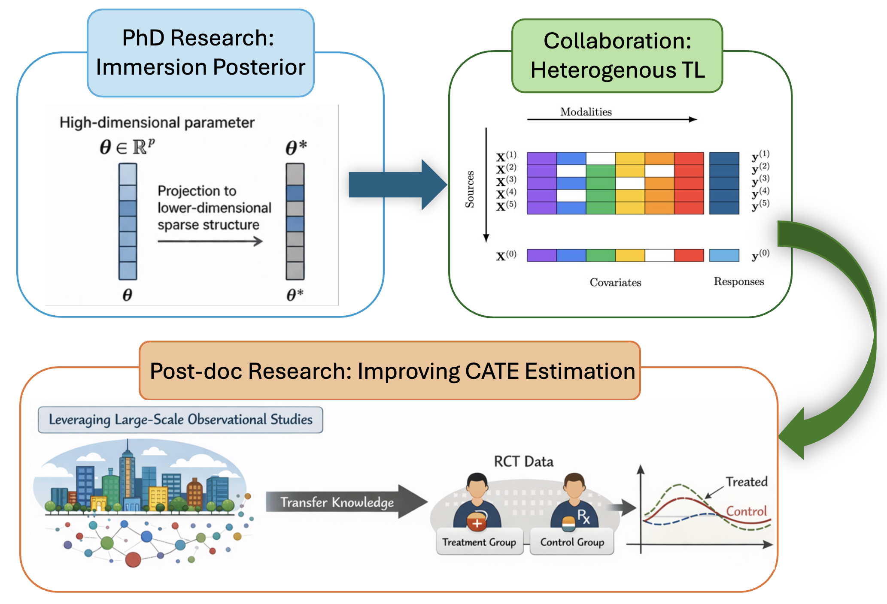
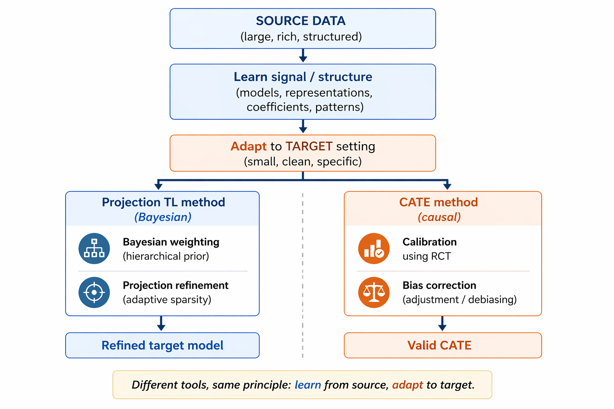

Research
Bayesian / Transfer Learning / Causal
My work sits at the intersection of Bayesian inference, transfer learning and causal methodology, motivated by problems in precision medicine, genomics, and biological network discovery. Below are the three main thrusts, each with representative papers.

Bayesian projection posteriors & transfer learning
My dissertation developed the sparse projection-posterior framework for high-dimensional Bayesian regression: projecting an unconstrained posterior onto a sparse or structured parameter space to obtain a computationally efficient posterior with strong theoretical guarantees. I am now extending this into ProjectionTL, a two-stage Bayesian transfer learning method.
- Bayesian High-dimensional Linear Regression with Sparse Projection-Posterior — Bayesian Analysis, 2026
- Projection-posterior for variable selection: Weak limit and coverage — Electronic Journal of Statistics, 2025
- Bayesian High-dimensional Grouped-regression using Sparse Projection Posterior — Statistica Sinica, 2026
- Hierarchical Projection for Adaptive Knowledge Transfer — Submitted to JASA
Causal inference for heterogeneous & fused data

This thrust develops methods for estimating and generalizing treatment effects when data are combined across sources that differ in covariate distribution, treatment assignment mechanism, or outcome model — including RCT/real-world-data fusion with calibration, sensitivity analysis for CATE under distribution shift via marginal sensitivity models, and instrumental variable regression for causal discovery in networks.
- Sharp Bounds for Treatment Effect Generalization under Outcome Distribution Shift — Accepted, CLeaR 2026
- Improving RCT-Based Treatment Effect Estimation Under Covariate Mismatch via Calibrated Alignment — Accepted, UAI 2026
- Improving Precision of RCT-Based CATE Estimation using Data Borrowing with Double Calibration — Revised, JMLR
- Improving RCT-Based CATE Estimation Under Covariate Mismatch via Double Calibration — Submitted, JASA
- Network-aware IV Regression for Causal Node Discovery and Estimation — Submitted, JASA
- Heterogeneous Effects of Continuous Treatments via Conditional Incremental Effects — Submitted, JASA
Statistical genomics & biological network discovery
I develop causal discovery and network inference methods for genomic and clinical data — including gene regulatory network inference under hidden confounding, causal structure learning for biomarker discovery, and survival modeling with longitudinal biomarkers — applied to problems in oncology, Parkinson's disease, and Alzheimer's disease.
- Penalized FCI for Causal Structure Learning in a Sparse DAG for Biomarker Discovery in Parkinson's Disease — Annals of Applied Statistics, 2026
- Ensemble survival analysis for preclinical cognitive decline prediction in Alzheimer's disease using longitudinal biomarkers — Journal of Alzheimer's Disease, 2025
- Discovering Candidate Genes Regulated by GWAS Signals in Cis & Trans — Statistics in Biosciences, 2024
- DAG DECORation: Continuous Optimization for Structure Learning under Hidden Confounding — Submitted
- Causal Discovery with Mixed Latent Confounding via Precision Decomposition — Submitted
Full publication list, including all preprints and working papers, on the Publications page.